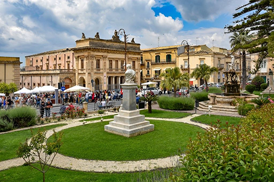
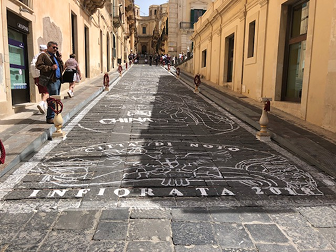
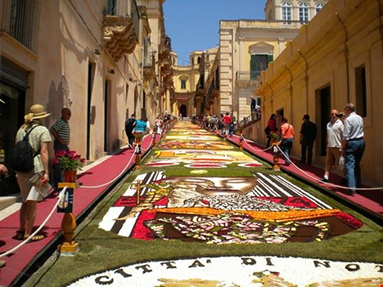
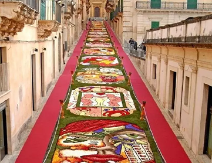
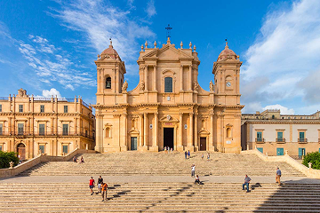
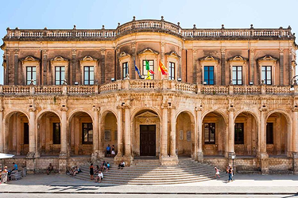

Una città barocca
Il nome XVI maggio ricorda il 16 maggio 1860, data in cui le truppe di Garibaldi entrarono a Noto durante la spedizione dei Mille, un evento chiave del Risorgimento italiano.




Via Nicolaci
Via Nicolaci, una celebre strada barocca, nota per i suoi balconi decorati e per ospitare ogni anno la celebre “infiorata di Noto”, una magnifica manifestazione floreale. Ogni anno per il mese di maggio, l’intera via si ricopre di immagini artistiche e tappeti floreali. Nato negli anni 80’, l’arte attira migliaia di visitatori.

Cattedrale di San Nicolò
La cattedrale di san Nicolò, uno dei capolavori del tardo barocco siciliano. Dedicato a San Nicolò di Mira, l’accasso è anche gratuito con donazioni in certi eventi.

Palazzo Ducezio
Palazzo Ducezio è il municipio storico di Noto, costruito tra 1746 e 1830 dall’architetto v. Sinatra, tutt’oggi è patrimonio dell’UNESCO.
Eventi
I principali eventi sono concerti tra cui il concerto di Capodanno fino a mezzanotte, eventi natalizi come l’accensione dell’albero di Natale, mercatini di artigianato o stand gastronomici.